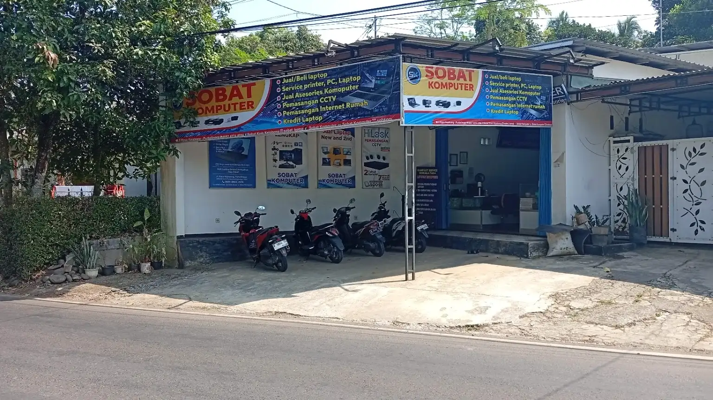

Produk Laptop
Lihat pilihan laptop yang tersedia untuk kebutuhan sekolah, kerja, atau penggunaan harian.
Lihat Produk LaptopNew Sobat Komputer menyediakan laptop, PC, aksesori komputer, servis perangkat, pemasangan CCTV, dan internet fiber rumah (iPrime) untuk wilayah Kejobong dan sekitarnya.

Kendala dicek lebih dulu, biaya dijelaskan, lalu pengerjaan dimulai setelah ada persetujuan.
Perangkat diperiksa dulu, baru ditentukan tindakan yang sesuai.
Ceritakan dulu kendala atau kebutuhan perangkat sebelum memutuskan layanan.
Kami sampaikan tindakan dan perkiraan biaya dulu sebelum mulai mengerjakan.
Garansi servis berlaku selama satu bulan sesuai syarat dan ketentuan pada nota.
Untuk jenis pekerjaan dan wilayah tertentu, kami bisa datang ke tempat.
Servis perangkat, jual beli, CCTV, sampai jaringan — semuanya ada di sini.
Mulai dari pemeriksaan kerusakan, penggantian keyboard, LCD, atau baterai, tambah RAM dan SSD, instal ulang, hingga servis printer.
Selengkapnya →Tersedia laptop dan PC dengan kondisi yang dijelaskan apa adanya, serta berbagai aksesori komputer. Tanyakan stok terbaru melalui WhatsApp.
Selengkapnya →Konsultasi dulu, survei lokasi, lalu pasang. Bisa untuk rumah atau tempat usaha.
Selengkapnya →Pemasangan internet fiber (iPrime), pengaturan MikroTik dan router, penarikan kabel LAN, serta penanganan jaringan lambat atau sering terputus.
Selengkapnya →Lihat pilihan produk laptop dan aksesori komputer yang tersedia. Tanya ketersediaan melalui WhatsApp atau lihat katalog resmi.
Lihat pilihan laptop yang tersedia untuk kebutuhan sekolah, kerja, atau penggunaan harian.
Lihat Produk Laptop
Cari mouse, keyboard, flashdisk, kabel, atau aksesori lain? Tanyakan stok melalui WhatsApp.
Lihat AksesoriTanya stok, kerusakan perangkat, atau layanan apa pun melalui WhatsApp.
Chat WhatsApp